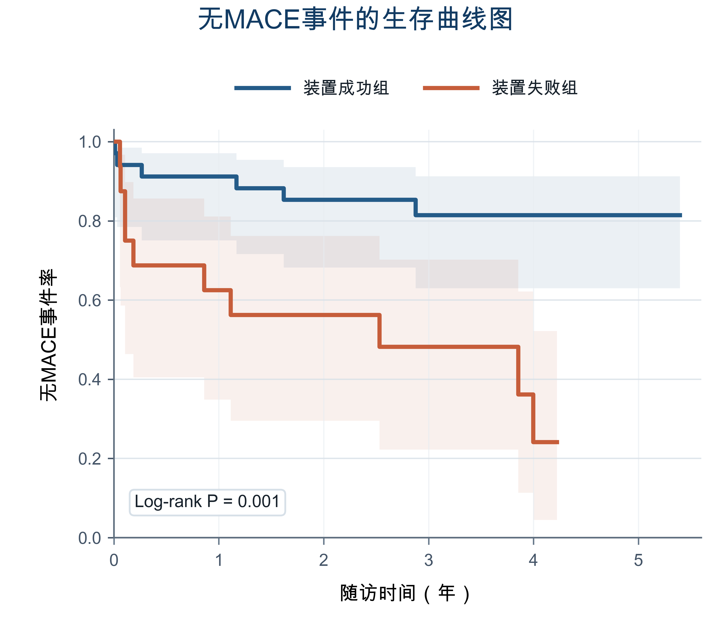

自膨瓣TAVR术前评估工具
该工具仅用于单纯主动脉瓣反流患者接受自膨瓣TAVR时的30天VARC-3装置成功概率估计。
评估结果
CT Anatomy Score
预测30天VARC-3装置成功概率
该评分用于估计自膨瓣TAVR术后30天VARC-3装置成功概率。
预后信息

装置成功组在随访期间总体无MACE事件率更高。
该工具仅用于单纯主动脉瓣反流患者接受自膨瓣TAVR时的30天VARC-3装置成功概率估计。
该评分用于估计自膨瓣TAVR术后30天VARC-3装置成功概率。

装置成功组在随访期间总体无MACE事件率更高。
致谢：感谢广东省人民医院、佛山市人民医院、玉林市第一人民医院、暨南大学附属第一医院、广东医科大学附属医院在研究数据收集与项目推进中的支持。